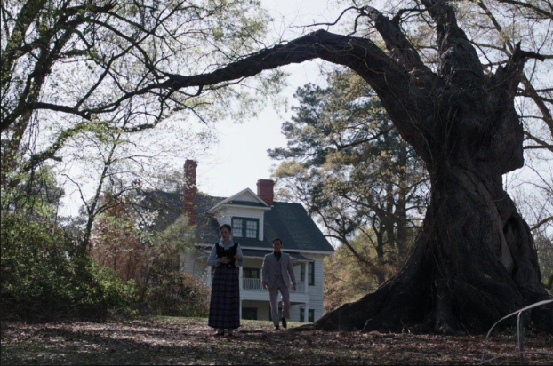

EXPEDIENTE N.º 001
Annabelle
Una muñeca asociada con sucesos inquietantes y fenómenos sobrenaturales dentro de la historia cinematográfica.
Clasificación: Objeto paranormal ficticio
Archivos confidenciales de fenómenos paranormales
ARCHIVO CLASIFICADO
Consulta algunos de los casos representados en las películas del universo de Expedientes Warren,cada archivo contiene información sobre la historia y sus elementos paranormales.
EXPEDIENTE N.º 001
Una muñeca asociada con sucesos inquietantes y fenómenos sobrenaturales dentro de la historia cinematográfica.
Clasificación: Objeto paranormal ficticio

EXPEDIENTE N.º 002
La película presenta a una familia que se muda a una casa donde comienzan a ocurrir acontecimientos inexplicables.
Clasificación: Caso paranormal cinematográfico

EXPEDIENTE N.º 003
Una figura sobrenatural del universo cinematográfico que aparece vinculada a una antigua abadía y a sucesos misteriosos.
Clasificación: Entidad ficticia